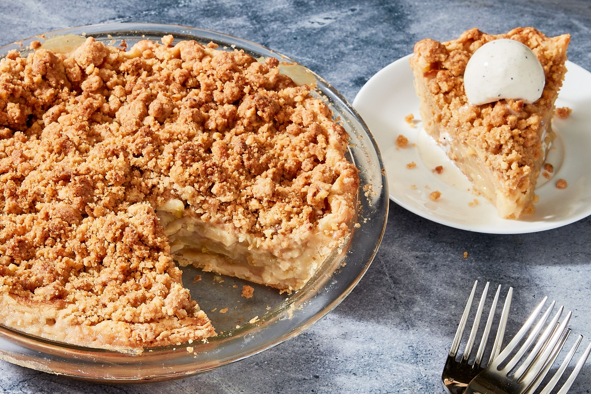

Apple Crumble Recipe

Apple crumble. The taste of autum in childhood. Crisp, sour apples rendered
sweet and yielding due to the alchemy of heat.
Sugar and spices merge to produce a spicy, caramelised aroma.
Ingredients
- Sliced cooking apples
- Sugar
- Cinnamon
- Crumble Mix
Steps
- Add the apple to the base of a pie dish
- Sprinkle sugar and cinnamon over the top
- Top with the crumble mix
- Bake at 180 degrees C for 45 minutes